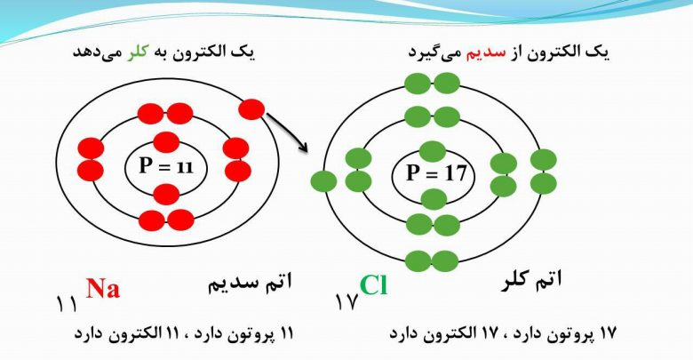
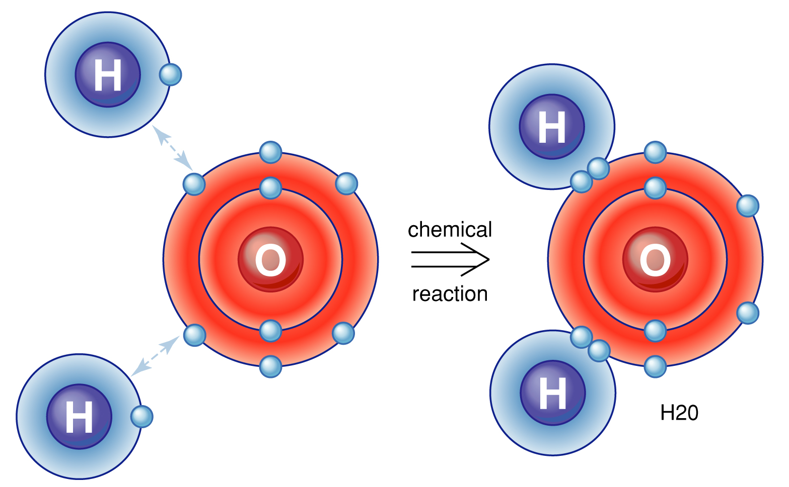

مرورگر شما از کتابخانه impressJS پشتیبانی نمیکند از یک مرورگر واقعی استفاده کنید.
برای نمایش درست این صفحه یا جاوااسکریپت مرورگر خود را فعال نمایید و یا از یک مرورگر واقعی استفاده کنید.
فصل ۱ علوم تجربی آرین عبداللهیان کلاس ۹.۲ پیوند های یونی و انتقالی (کووالانسی)
پیوند یونی 
پیوند کووالانسی 